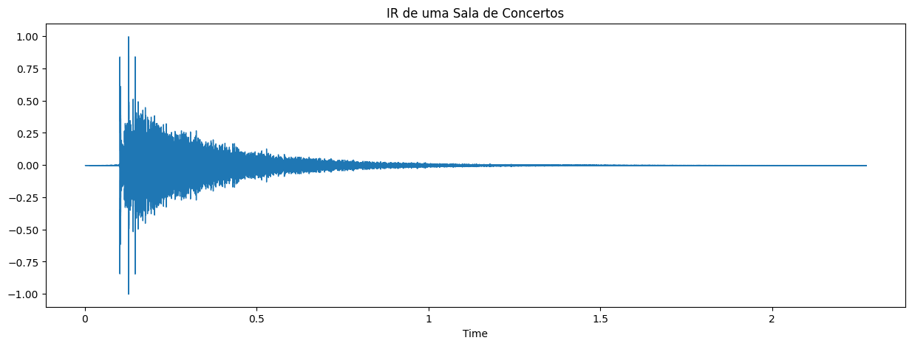
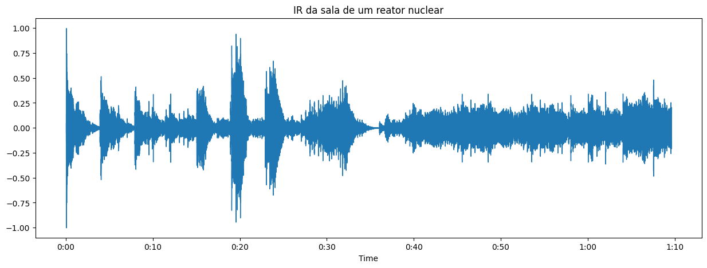

a. MIDI
i. Conhecer instrumentos MIDI
ii. Verificar a qualidade da reprodução MIDI
iii. Configurar insturmentos MIDI
b. Modificar a reprodução sonora através da resposta impulsiva do ambiente
2. Resultados
Resposta Impulsiva - Arquivos Professor
IR de uma Capela para o arquivo "Mazurca_Chopin_opus7_no1_2":

IR de uma Sala de concertos para o arquivo "usina_main_s1_p5":
3. Resultados Músicas Escolhidas pelos integrantes
- a) Ana: Sonata No. 8 C minor (Pathetique) , Opus 13 (1799), Beethoven
- b) Ana: Sonata No. 11 A major (Alla Turca) , KV 331 (1783), Mozart
a) Sonata No. 8 C minor (Pathetique) , Opus 13 (1799), Beethoven, renderizada pelo reaper, com instrumento virtual Piano:
b) Sonata No. 11 A major (Alla Turca) , KV 331 (1783), Mozart, renderizada pelo reaper, com instrumento virtual Piano:
4. Resultados Notebooks:
Ana:
- Música de Mozart em uma sala de concertos:
- Música de Mozart em uma capela:
- Música de Mozart em uma igreja grande:
- Música de Mozart em um auditório médio:
- Música de Mozart em um reator nucelar:
- Cantoria em um reator nuclear: R1 Nuclear Reactor Hall
- Cantoria em um lugar aberto: Abies Grandis Forest, Wheldrake Wood
- Cantoria em um lugar grande fechado: Central Hall, University of York
Link para os resultados, integrante Ana: Lab 8